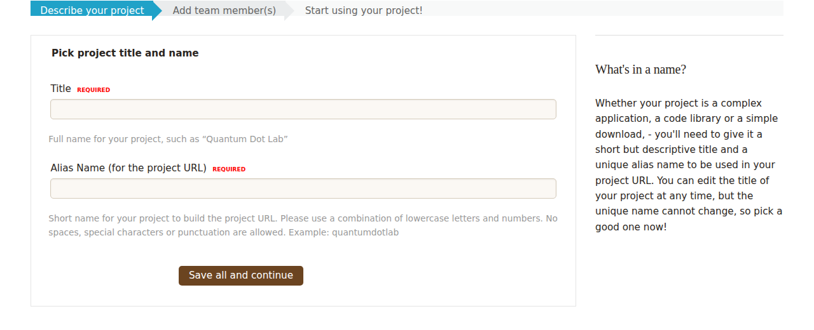
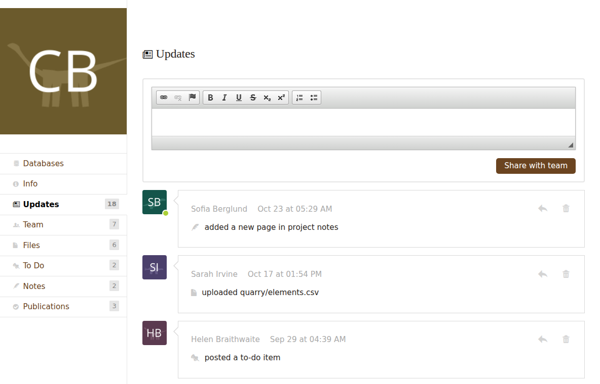
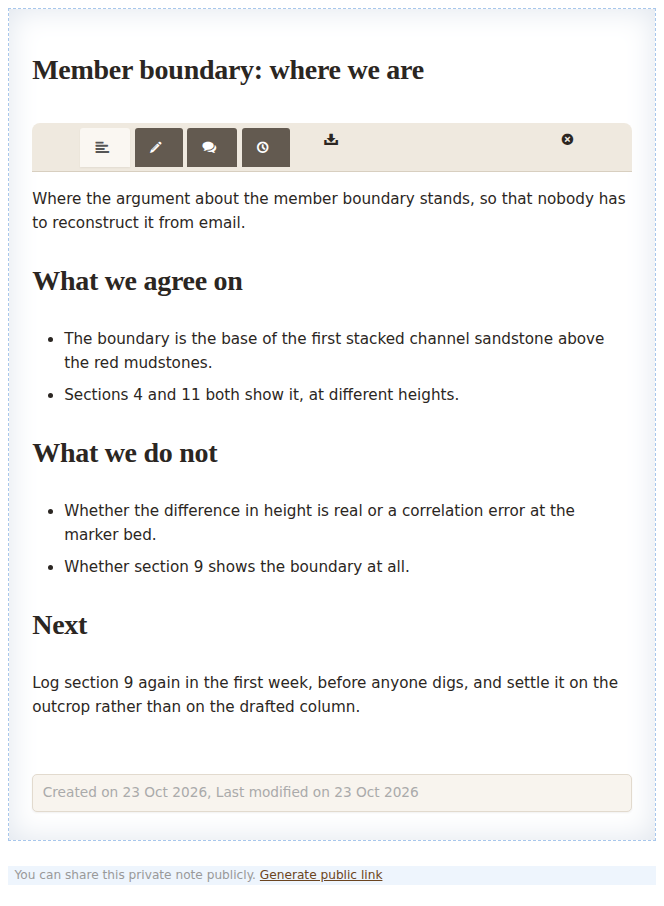
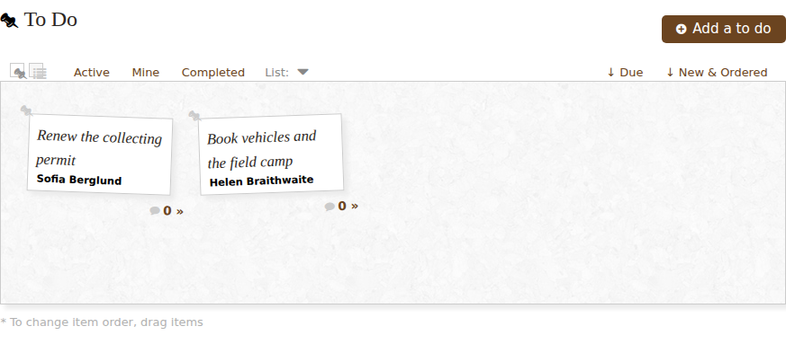
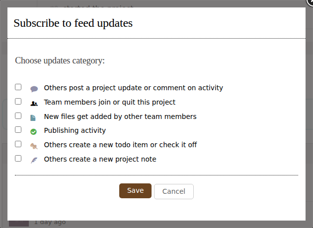
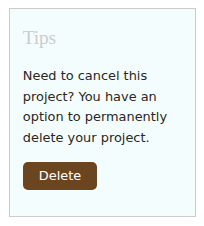

Hub users
Projects
A project is a private workspace on the hub for a piece of work in progress. You create it, you choose who is on the team, and nobody outside that team sees anything in it unless you decide otherwise. Inside are a file area, wiki-style notes, a shared to-do list, an activity feed, and — where the hub offers them — searchable data tables and a route to publishing.
Projects exist for the months before work is ready to show anyone. A soil lab measuring nitrate in field samples keeps the raw instrument readings, the script that cleans them, and the argument about which outliers to drop in a project, where the four people doing the work can all reach them and nobody else can. When the cleaned dataset is finally worth citing, the project is also where they release it.
That release is the other half of the story, and Publications tells it:
- A project is private, editable, and changes every day.
- A publication is public, frozen, and carries a DOI so a paper can cite it.
You do the work in the first and release it from the second. One project can produce several publications, each publication can have several versions, and the project carries on after every release. Nothing you put in a project is published by putting it there; publishing is a deliberate, separate act.
Projects live at /projects on the hub. The Learn more button on that
page opens /projects/features, the hub's own tour of what a project can do.
Read the two warnings in The team and File history before you start. On a hub left at its shipped settings, neither the team editor nor file versioning is available to you after setup, and both are easier to plan around than to discover later.
Finding your projects
Go to /projects. The page has two halves. The top explains what a project
is and offers Start a project and Learn more; the My Projects
section below lists every project you belong to. If you are not logged in,
that section asks you to log in first.
Browse public projects, at the top right, lists the projects whose owners have made them public. You can search the list, sort it by title or owner, and filter it to show archived projects.
Starting a project
Start a project when a piece of work needs a shared home: somewhere the whole team reaches the same files, and somewhere the record of what was done survives a laptop being replaced. One project per body of work is the usual shape — not one per person, and not one per file.
Setup is a short wizard. By default it has two steps — Describe your project and Add team member(s) — and a third, One last thing..., appears only on hubs that have turned on the agree-to-terms screen. The progress bar at the top of each step shows where you are.


Step 1: describe your project
- Select Start a project.
- Type the project's full name in Title. The soil lab types Nitrate in Field Samples 2026.
- Type a short name in Alias Name (for the project URL). Use lowercase
letters and numbers only: no spaces, punctuation, or special characters.
The soil lab types
nitrate2026. The alias becomes the project's address,/projects/nitrate2026, and cannot be changed afterwards, so pick something you will still recognise in two years. The form checks the name as you type and suggests an alternative if it is taken. - Answer Would you like to provide more information about your project? with Yes, I'll do it now to fill in the rest of the step, or No, later to skip straight to the team.
- In About, describe the project. This is what visitors see if the project is public.
- Under Include project in search? choose one:
- Project is hidden from search and listings (private project)
- Anyone can find this project in search & listings and view its basic information (public project)
- Under Add a project picture, upload an image to use as the project's thumbnail.
- Select Save all and continue.
Step 2: add team members
The second step is the team editor. You are already on the team, as the project's manager; this step is where everyone else gets in.
Add everyone here. On most hubs this is the only screen that opens the team editor — see the warning in The team — so the soil lab adds all four people now rather than planning to come back.
- Choose the role for the people you are about to add: manager, collaborator, or reviewers.
- Type a name in Individual, or an email address to invite someone who has no account on the hub yet. Type a group name in User group to add everyone in a hub group at once. Both boxes suggest matches as you type; pick one from the list.
- Select add.
- Repeat for each person or group. The table below the form lists everyone on the team.
- Select Save all and continue.
The three roles are:
| Role | Can |
|---|---|
| Manager | Invite and remove team members, change project information and settings, and everything a collaborator can do |
| Collaborator | Upload and manage project files, edit project publications, use the project's tools such as notes and to-do items |
| Reviewer | View files, publications, notes, to-do items and team members. Read only |
Step 3: agree to terms
Where the hub has enabled it, a final screen asks you to accept the hub's privacy terms before the project opens. Depending on how the hub is configured it may also ask:
- Are you planning to upload datasets containing any sensitive or restricted data? — either as a single acknowledgement that the project will not hold sensitive data, or as a set of checkboxes for export-controlled data, IRB-governed data, HIPAA-protected health information, and FERPA-protected student records. Ticking one of the latter two may add an extra acknowledgement you have to confirm.
- Grant information — grant title, PI, award number, agency and budget, if the hub collects it.
Tick the box next to Yes, I read, understand and acknowledge the privacy terms, then select Save all and continue. The project opens.
On hubs that require approval for sensitive-data projects, answering yes to the export, HIPAA, or FERPA questions puts the project into pending approval instead. An administrator reviews it before it becomes active.
Inside a project
A project is a set of areas, and you will not use all of them. Files and Updates carry most of the work on most projects; Notes, To Do and Databases earn their place on some and sit unused on others. Nothing is lost by ignoring a tab.
Each area of a project is a tab. Which tabs you see depends on which project plugins the hub has enabled and configured:
| Tab | What it is |
|---|---|
| Updates | The activity feed: a stream of what everyone on the team has done, with a box to post your own update and comment on others |
| Info | The project description, and the grant information if the hub collects it |
| Team | The member list and, for managers, the team editor |
| Files | The project's file area. See Project files |
| Databases | Searchable tables built from a spreadsheet. See Databases |
| Notes | Wiki-style pages for anything the team needs to write down |
| To Do | Shared task lists |
| Publications | Drafts and released versions of work published from the project |
Two more plugins ship but add no tab of their own: Projects - Watch provides the feed subscription described below, and Projects - Links supplies external content that publications can cite.
The tabs sit in a menu down the left of the project page. Where the hub uses the extended page layout instead, they run across the top and Files and Databases are grouped under an Assets heading.


At the top right of every project page is your role in it — Project manager, Project collaborator, or Project reviewer. Hover over it for the menu of project-wide actions: Edit project, Invite people to join, View public profile (public projects only), and Leave this project.
Editing project information
- Open the project.
- Hover over your role at the top right and select Edit project.
- Change the Title and edit the description in About.
- To change the thumbnail, choose a file under Upload new image and select Upload. It replaces the existing one.
- Select Save changes.
Managers can always do this. On hubs that allow it, collaborators can edit the description too.
The alias cannot be changed. Ask the hub's support staff if a project's address has to move.
The team
The Team tab lists everyone on the project with their role, when they joined, when they last visited, and — for members who came in through a hub group — which group. The list itself is read-only, except that a manager sees Approve request and Deny request beside anyone who has asked to join.
Managers get an Edit Team button above the list. It opens the same editor used during setup: add people, change a member's role by selecting it, tick the boxes beside members and select delete to remove them. Under Project owner in that editor, Edit hands the project to someone else.
Any member of a project with more than one member can leave it: hover over your role at the top right and select Leave this project.
Group-owned projects
A project can be owned by a hub group rather than by a person. In a group-owned project the team editor offers a choice:
- Include all group members. Everyone in the group has project access for as long as their group membership lasts, and cannot be removed individually.
- Specify membership. You choose which group members get access.
Add people from outside the group in the usual way.
Notes
Notes are for the writing that is not a file: the method as it currently stands, the meeting decisions, the reasons a parameter was changed. The soil lab keeps its sampling protocol here, so that when a reviewer asks how the samples were stored there is one page to point at rather than four people's memories.
The Notes tab is a small wiki. Create a page, write in it, tag it, and comment on it. Each note keeps its history, so you can see what changed. Note history is the notes plugin's own, and does not depend on the project's file version tracking.
A note is private to the team until you share it. If the hub has public links switched on — an administrator's choice, in the options of the projects notes plugin — the bottom of a note offers Generate public link; select it. The pop-up gives you an address anyone can open — paste it into email, chat, or a web page. Select Close this to dismiss the pop-up. In a public project you can also choose whether the note is listed on the project's public page or reachable only by its link.


To Do
The To Do tab is for work that has to be assigned to a person and finished: re-run the calibration, chase the missing March samples, write the data dictionary before we submit. If your team already tracks its work somewhere else, skip this tab.
The To Do tab holds the project's task lists. Add an item, assign it to someone, and check it off when it is done. Two buttons above the list switch the layout: Pinboard view shows items as cards you can drag to reorder, List view stacks them as rows. Both show the newest first.


The sidebar lists the project's to-do lists. My to do's is a built-in list of everything assigned to you; you cannot add to it directly, because it fills itself from items assigned to you elsewhere. Select Add to make a list of your own, and pick a list when you create an item.
Following what happens
You do not want to open a project every day to find out whether anyone uploaded anything. Feed subscription mails you the parts you care about instead.
Everything the team does shows up on the Updates tab. To get it by email as well, find the Subscribe to feed updates box among the boxes beside or below the feed and select it. The box comes from the Projects - Watch It plugin, which a hub installs switched off; if you cannot find it, ask the hub's administrators.


Tick the categories you want to hear about — project updates and comments, team changes, new files, publishing activity, new to-do items, new notes — and select Save. Mail goes to the address on your hub profile. Come back to the same box, now labelled Manage feed subscription, to change or cancel it.
Some hubs subscribe members automatically when they join a project; in that case the box lets you opt out.
Deleting a project
Delete a project only when the work is genuinely finished with. A project that has produced a publication should be left alone: the publication is a separate, permanent record, but the draft material behind it lives here.
Deleting a project is a manager's job and it cannot be undone from the front end.
- Hover over your role at the top right and select Edit project.
- Under Need to cancel this project? in the left column, select Delete.
- Confirm with Yes, delete.


The project disappears from your list and from search, and the hub revokes the file-system access that went with it. The files themselves stay on the hub's disk. If you delete a project by mistake, ask the hub's support staff: an administrator can still reach it.
Archiving is the gentler option, and only an administrator can do it. An archived project keeps its files and stays readable, but nobody can change it.
What administrators control
Much of what a project offers is set hub-wide, not per project: which tabs exist, how much disk space a project gets, whether the setup wizard asks about sensitive data or grants, and which external storage providers a project can connect to. Those settings are described in Projects and Project file connectors in the managers book.
Rewritten and checked against 2.4-main @ 42a7a5b5c7 on 2026-09-10.